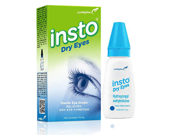

Lanamol
500mg kaplet
Aturan pakai:
Dikonsumsi sebelum atau sesudah makan.
Kegunaan:
Meredakan sakit kepala, sakit gigi, dan nyeri otot yang menganggu.
Menurunkan demam yang menyertai flu dan demam sesudah
vaksinasi.

Insto
Dry Eyes
Aturan pakai:
Teteskan pada bagian mata yang sakit.
Kegunaan:
Mengatasi kemerahan dan rasa perih di mata yang disebabkan oleh iritasi ringan karena debu, asap, atau angin.

Polysilane
Obat Maag & Kembung
Aturan pakai:
Berikan sebelum makan , pada saat perut kosong.
Kegunaan:
Obat ini digunakan untuk mengurangi gejala-gejala yang berhubungan dengan lambung.